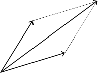

2 Vectores en el plano
2.1 Aritmética vectorial
Definición 2.1 Un vector es un arreglo o una lista de números reales, Los vectores los identificamos con una letra mayúscula o minúscula y en este ultimo caso con una flecha encima de esta. Los números en el vector son llamados componentes y se enumeran de izquierda a derecha empezando en uno, el número de componentes del vector se conoce como la dimensión del vector
Un vector de dimensión dos es pareja de números reales \(a_1\) y \(a_2\) dispuestos en una fila o una columna. Cada uno de estos números recibe el nombre de coordenada o componente del vector.
El conjunto de todos los vectores en el plano se denota \(\mathbb{R}^2\). Los vectores se representan con una letra mayúscula, o con una letra minúscula y una flecha en la parte superior de esta, es decir: \[ A = (a_1, a_2), \quad \overrightarrow{a} = (a_1, a_2). \]
Definición 2.2 Dos vectores \(A\) y \(B\) de \(\mathbb{R}^2\) son iguales siempre y cuando sus componentes coincidan. Es decir, si \(A = (a_1, a_2)\) y \(B = (b_1, b_2),\) diremos que \(A = B\) si \(a_{1} = b_{1}\) y \(a_2 = b_2\).
Definición 2.3 La suma de los vectores \(A\) y \(B\) de la misma dimensión, se define como el vector que se obtiene de sumar componente a componente de \(A\) y \(B\) es decir \[ A + B = (a_1 + b_1, a_2 + b_2). \]
También se puede representar geométricamente la suma de los vectores \(A\) y \(B\) realizando el siguiente procedimiento, trazamos una linea punteada desde el vector \(A\) paralela al vector \(B\) y trazamos desde el extremo de \(B\) una linea punteada paralela al vector \(A\), el punto de corte entre estas lineas coincide con el extremo del vector \(A+B\), esto se muestra en la siguiente figura.

Definición 2.4 Si \(\alpha\) es un número real (escalar), se define \(\alpha A\) como el vector que se obtiene al multiplicar \(\alpha\) por cada componente de \(A,\) \[ \alpha A = (\alpha a_1, \alpha a_2). \]
Note que la suma de vectores es conmutativa y asociativa. Se sigue también que la multiplicación por escalares es asociativa y verifica dos leyes distributivas, esto es \[ \alpha(A + B) = \alpha A + \alpha B, \quad (\alpha + \beta)A = \alpha A + \beta A, \] con \(A\) y \(B\) elementos de \(\mathbb{R}^2,\) \(\alpha\) y \(\beta\) escalares.
Definición 2.5 El vector cuyas componentes son \(\mathcal{O}\) se conoce como el vector nulo y se representa como \(\mathcal{O},\) es decir \(\mathcal{O} = (0, 0).\)
El vector nulo verifica \(A + \mathcal{O} = A.\) El vector \((-1)A\) se representa por \(-A\) y comúnmente se conoce como el opuesto de \(A\) el cual satisface \(-A + A = \mathcal{O}.\) Se acostumbra a escribir \(A - B\) en lugar de \(A + (-1)B.\)
Existe una identificación natural entre el vector \(A = (a_1, a_2)\) y el punto \(A(a_1, a_2)\) del plano cartesiano, lo cual permite interpretar geométricamente el vector como el segmento de recta dirigido del origen al punto. Esta identificación nos permitirá referirnos en ciertos contextos a puntos y vectores de manera indistinta.
En general un par de puntos \(A\) y \(B\) del plano cartesiano se denomina vector geometríco si un punto es el punto inicial del vector (suponga \(A\)) y el otro punto es el extremo final del vector (suponga \(B\)). Este vector se representa como \(\overrightarrow{AB}\) y se entiende como el segmento de recta dirigido del punto \(A\) al punto \(B.\) Más aún, si \(A(a_1, a_2)\) y \(B(b_1, b_2),\) entonces \(\overrightarrow{AB}\) tiene componentes \((b_1 - a_1, b_2 - a_2)\).
Definición 2.6 Dos vectores \(A\) y \(B\) de \(\mathbb{R}^2\) son paralelos si \(B = \alpha A\) para un cierto escalar \(\alpha\) no nulo. Si \(\alpha\) es positivo, \(A\) y \(B\) tienen la misma dirección. Si \(\alpha\) es negativo, \(A\) y \(B\) tienen direcciones opuestas.
2.1.1 Productos interior y exterior
Definición 2.7 Sean \(A = (a_1, a_2)\) y \(B = (b_1, b_2)\) dos vectores de \(\mathbb{R}^2.\) El producto interior o producto punto entre \(A\) y \(B,\) representado por \(A \cdot B\) se define como: \[ A \cdot B = a_1 b_1 + a_2 b_2. \]
Note que \(A \cdot B = B \cdot A\)
Teorema 2.1 Sean \(A,\) \(B\) y \(C\) vectores de \(\mathbb{R}^2.\) Para cualquier escalar \(\alpha\) se verifican las siguientes propiedades:
\(i.\) \(A \cdot B = B \cdot A.\)
\(ii.\) \(A \cdot ( B + C) = A \cdot B + A \cdot C.\)
\(iii.\) \(\alpha (A \cdot B) = (\alpha A) \cdot B = A \cdot (\alpha B).\)
\(iv.\) \(A \cdot A > 0\) si \(A \neq O.\) \(\quad\) \(A \cdot A = 0\) si y sólo si \(A = O.\)
Prueba. La propiedad \(i.\) es consecuencia de la propiedad conmutativa de las operaciones de los números reales. Demostraremos la propiedad \(ii.\) Las propiedades \(iii.\) y \(iv.\) se proponen como ejercicio.
Considere los vectores \(A = (a_1, a_2),\) \(B = (b_1, b_2)\) y \(C = (c_1, c_2).\) \[\begin{align*} A \cdot (B + C) & = a_1 (b_1 + c_1) + a_2 (b_2 + c_2) \\ &= a_1 b_1 + a_2 b_2 + a_1c_1 + a_2c_2 \\ &= A \cdot B + A \cdot C \end{align*}\]
Definición 2.8 Diremos que dos vectores \(A\) y \(B\) de \(\mathbb{R}^2\) son ortogonales o perpendiculares si \(A \cdot B = 0.\)
En el plano es muy sencillo encontrar vectores perpendiculares a un cierto vector \(A,\) y estos corresponden a la rotación \(\pi/2\) radianes de \(A\) a favor o en contra de las manecillas del reloj. De acuerdo con esto si tengo un vector en el plano y busco un vector perpendicular a este a favor de las manecillas del reloj, permuto las componentes y la segunda la multiplico por \(-1,\) y si tengo un vector en el plano y busco un vector perpendicular a este, en sentido contrario al reloj permuto las componentes y la primera la multiplico por \(-1.\)
Definición 2.9 La longitud o norma de un vector \(A\) se representa como \(\vert \vert A \vert \vert\) y corresponde al número real \[ \vert \vert A \vert \vert = \sqrt{A \cdot A}. \]
En particular si \(A = (a_1, a_2)\) entonces \(\vert \vert A \vert \vert = \sqrt{a_1^2 + a_2^2}\) y \(\vert \vert A \vert \vert^2 = a_1^2 + a_2^2.\) Note que \(\vert \vert A \vert \vert\) es la distancia del punto \(A(a_1, a_2)\) al origen de coordenadas.
Definición 2.10 La cantidad \(\vert \vert A-B \vert \vert\) es igual a la cantidad \(\vert \vert B-A \vert \vert\) y corresponde con la distancia entre el punto \(A\) y el punto \(B\) \((d(A,B))\) \[ d(A,B) = \sqrt{(x_-x_0)^2 +(y_1-y_0)^2}. \]
Teorema 2.2 Sea \(A\) es un vector de \(\mathbb{R}^2\) y \(\alpha\) un escalar, entonces se cumplen las siguientes propiedades:
- \(i.\) \(\vert \vert A \vert \vert > 0\) si \(A \neq 0.\) \(\quad\) \(\vert \vert A \vert \vert = 0\) si y sólo si \(A = O.\)
- \(ii.\) \(\vert \vert \alpha A \vert \vert = \vert \alpha \vert \, \vert \vert A \vert \vert.\)
Prueba. Demostraremos la propiedad \(ii.\) La propiedad \(i.\) se propone como ejercicio.
Sean \(A = (a_1, a_2)\) y un escalar \(\alpha.\) Entonces, \[\begin{align*} \vert \vert \alpha A \vert \vert & = \sqrt{ \alpha^2 a_1^2 + \alpha^2 a_2^2 } \\ &= \sqrt{\alpha^2 ( a_1^2 + a_2^2 )} \\ &= \sqrt{\alpha^2} \sqrt{a_1^2 + a_2^2} \\ &= \vert \alpha \vert \, \vert \vert A \vert \vert. \end{align*}\]
Definición 2.11 Un vector \(A\) de \(\mathbb{R}^2\) es llamado vector unitario si \(\vert \vert A \vert \vert = 1.\)
Un vector unitario \(A\) comúnmente es denotado como \(\widehat{A}.\) Todo vector \(A\) no nulo de \(\mathbb{R}^2\) puede multiplicarse por un escalar \(\alpha\) de manera que la norma de este nuevo vector \(\alpha A\) sea uno, este escalar es \(1/\vert \vert A \vert \vert.\) En efecto, si \(A = (a_1, a_2)\) la norma del vector \(\frac{1}{\vert \vert A \vert \vert} A,\) de acuerdo con la propiedad \(ii.\) en el Teorema 2.2, es: \[ \Big\vert \Big\vert \frac{1}{\vert \vert A \vert \vert } A \Big\vert \Big\vert = \frac{1}{\vert \vert A \vert \vert} \vert \vert A \vert \vert = 1. \]
El proceso mediante el cual se multiplica un vector no nulo por un escalar para que el nuevo vector resultante tenga norma igual a uno se conoce como normalización vectorial o simplemente normalizar un vector.
A lo largo de este libro, identificaremos con \(e_1\) y con \(e_2\) a los vectores de norma \(1\), paralelos a los ejes \(x\) e \(y\) respectivamente, \[ e_1 = (1,0), \quad e_2 = (0,1). \tag{2.1}\]
Ejemplo 2.1 Los puntos \(A(-1,0)\) y \(B(3,2)\) son dos vértices que coinciden con los extremos del lado de un rectángulo, cuyo lado mas corto es la tercer parte de su lado mas largo, encuentre los otros vértices del rectángulo.
Solución (Este problema puede tener varias soluciones)
Vamos a suponer que el segmento \(\overline{AB}\) es el de la longitud mas corta, y como se trata de un rectángulo el ángulo entre los segmentos debe ser de \(90^{\circ}\).
Podríamos encontrar un vértice \(A'\) del rectángulo desplazando tres veces la longitud del segmento \(\overline{AB}\) en una dirección perpendicular a \(B-A\). Como \(B-A=(4,2)\) entonces una dirección posible perpendicular a esta sería \(D=(-2,4),\) de acuerdo con esto \[\begin{align*}
A'&= A+3\vert \vert B-A \vert \vert \widehat{D}
\\
&= (-1,0)+3(-2,4)
\\
&=(-7,12).
\end{align*}\] De forma similar desplazando el punto \(B\) podríamos encontrar otro vértice del rectángulo, digamos \(B'\), es decir
\[
B' = B+ 3 \vert \vert B-A \vert \vert \widehat{D}.
\]
Un calculo directo muestra que \(B'= (-3,14).\)
Teorema 2.3 (Teorema de Pitágoras) Si \(A\) y \(B\) son dos vectores perpendiculares, entonces \[ \vert \vert A - B \vert \vert^2 = \vert \vert A \vert \vert^2 + \vert \vert B \vert \vert^2. \]
Prueba. Note que \[\begin{align*} \vert \vert A - B \vert \vert^2 & = (A - B) \cdot (A - B) \\ & = \vert \vert A \vert \vert^2 + 2 A \cdot B + \vert \vert B \vert \vert^2 \end{align*}\] y la prueba finaliza al emplear la hipótesis de la perpendicularidad de \(A\) y \(B,\) pues esto implica que \(A \cdot B = 0.\)
Teorema 2.4 (Desigualdad de Cauchy-Schwarz) Si \(A\) y \(B\) son dos vectores de \(\mathbb{R}^2,\) entonces, \[ (A \cdot B)^2 \leq \vert \vert A \vert \vert^2 \, \vert \vert B \vert \vert^2. \]
Prueba. Sean \(A = (a_1, a_2)\) y \(B = (b_1, b_2).\) Para cualquier n'umero real \(\alpha\) se verifica que: \[ 0 \leq (a_1 - \alpha b_1)^2 + (a_2 - \alpha b_2)^2 = \vert \vert A \vert \vert^2 - 2 \alpha A \cdot B + \alpha^2 \vert \vert B \vert \vert^2. \] Si \(\vert \vert B \vert \vert = 0\) entonces por la propiedad \(i.\) del Teorema 2.2 se tiene que \(b_i = 0\) para \(i = 1,2,\) y la desigualdad se verifica de manera evidente.
Si \(\vert \vert B \vert \vert \neq 0\) tome \(\alpha = (A \cdot B)/ \vert \vert B \vert \vert^2,\) y al remplazar en la desigualdad anterior se tiene que: \[ 0 \leq \vert \vert A \vert \vert^2 - 2 \frac{(A \cdot B)^2}{\vert \vert B \vert \vert^2} + \frac{(A \cdot B)^2}{\vert \vert B \vert \vert^2} = \vert \vert A \vert \vert^2 - \frac{(A \cdot B)^2}{\vert \vert B \vert \vert^2}, \] lo que finaliza la prueba.
Otra manera de presentar la desigualdad de Cauchy–Schwarz, con \(A\) y \(B\) vectores de \(\mathbb{R}^2,\) es \(\vert A \cdot B \vert \leq \vert \vert A \vert \vert \, \vert \vert B \vert \vert.\)
Corolario 2.1 (Desigualdad triangular) Si \(A\) y \(B\) son dos vectores de \(\mathbb{R}^2,\) entonces \[ \vert \vert A + B \vert \vert \leq \vert \vert A \vert \vert + \vert \vert B \vert \vert. \]
Prueba. \[ \vert \vert A + B \vert \vert^2 = (A + B)\cdot (A + B) = \vert \vert A \vert \vert^2 + 2 A \cdot B + \vert \vert B \vert \vert^2, \] al aplicar la desigualdad de Cauchy–Schwarz a esta última expresión se obtiene: \[ \vert \vert A + B \vert \vert^2 \leq \vert \vert A \vert \vert^2 + 2 \vert \vert A \vert \vert \, \vert \vert B \vert \vert + \vert \vert B \vert \vert^2 = ( \vert \vert A \vert \vert + \vert \vert B \vert \vert)^2 \] lo que finaliza la prueba.
El Corolario 2.1 tiene una interesante interpretación geométrica que se puede enunciar de la siguiente manera: en todo triángulo la suma de las longitudes de dos lados arbitrarios siempre es mayor a la longitud del lado restante.
2.1.2 Proyección de un vector
Considere dos vectores \(A\) y \(B\) ortogonales y un vector \[ P = A + t \ B. \] Note que \(P\) es el resultado de sumar \(A\) más \(t\) escalar veces \(B\). El vector \(tB\) se conoce como la proyección de \(P\) sobre \(B.\) Para encontrar el valor de \(t\) multiplicamos la ecuación tal por \(B,\) es fácil comprobar que: \[ t = \frac{P \cdot B}{\vert \vert B \vert \vert^2}. \]
Si quiero proyectar el vector \(A\) sobre el vector \(B\) entonces extiendo la recta que contiene el vector \(B\) y desde el extremo de \(A\) trazo una perpendicular a la recta extendida, el punto resultante es el extremo del vector \(Proy_B A.\)
¿Que significa \(\vert \vert Proy_B A \vert \vert\)? El tamaño de la sombra que produce \(A\) sobre la dirección de \(B\)
Podemos aplicar la proyección de un vector para encontrar la distancia de un punto a una recta. En efecto considere la recta \(l\) y \(D\) un vector perpendicular a \(B,\) sea \(F\) un punto que no pertenece a la recta \(l_{A;B}\) y \(Q\) un punto que pertenece a la recta \(l_{A;B},\) esto último quiere decir que existe un escalar \(\alpha\) tal que \(Q = A + \alpha B.\)
En la Figura \(\ref{fig::proy}\), \(tD\) será la proyección del vector \(Q - F\) siendo \[ t = \frac{(Q - F) \cdot D}{\vert \vert D \vert \vert^2}, \]
Como la distancia de \(F\) a la recta \(l_{A;B}\) es \(\vert t \vert \vert \vert D \vert \vert\) se tiene que: \[ d(F, l) = \frac{ \vert (Q - F) \cdot D\vert }{\vert \vert D \vert \vert } \quad \text{o} \quad d(F,l) = \vert (Q - F) \cdot \widehat{D} \vert. \] Note que \((Q - F)\cdot D = A \cdot D - F \cdot D,\) esto muestra que la elección de \(Q\) es irrelevante para calcular la distancia del punto a la recta, más aún, esto sugiere que en la ecuación podemos cambiar \(Q\) por \(A\) y el resultado es el mismo.
2.1.3 Producto exterior
Definición 2.12 Sean \(A = (a_1, a_2)\) y \(B = (b_1, b_2)\) dos vectores de \(\mathbb{R}^2.\) El producto exterior de \(A\) con \(B\) se representa \(A \times B\) y corresponde con \[ A \times B = a_1 b_2 - a_2 b_1 \] El producto exterior de \(B\) con \(A\) sería entonces \[ B \times A = b_1 a_2 - b_2 a_1. \] Note que \(A \times B = - B \times A.\)
Se desprende directamente de la definición de producto exterior, que si \(A\) y \(B\) son dos vectores paralelos entonces \[ A \times B = 0. \]
Teorema 2.5 (Regla de Cramer) Sean \(A\) y \(B\) dos vectores, tales que $A B . $ Entonces para todo punto \(P\) del plano, existen escalares \(\alpha\) y \(\beta\) tales que \[ P = \alpha A + \beta B. \]
::: {.proof}
Sea \(r_1\) un escalar tal que el vector \(P - r_1A\) sea paralelo al vector \(B,\) De acuerdo con esto \[ r_1 = \frac{P \times B}{A \times B}, \] y sea \(r_2\) un escalar tal que el vector \(P - r_2B\) sea paralelo al vector \(A,\) De acuerdo con esto \[ r_2 = - \frac{P \times A}{A \times B}, \] Note que \(r_1\) y \(r_2\) son los escalares \(\alpha\) y \(\beta\) que se están buscando respectivamente.
2.1.4 Áreas y centros de triángulos
2.1.5 Área de un triángulo
Definición 2.13 La altura de un triángulo es el segmento perpendicular que va de un vértice a la recta que contiene al lado opuesto de dicho vértice.
La base es la longitud del lado opuesto al vértice que se ha seleccionado para determinar la altura.
Ejemplo 2.2 Los punto \(A(-1,1)\), \(B(2,3)\) y \(C(5,-2)\) son los vértices del triángulo \(\triangle ABC\) encuentre \(\vert {\triangle ABC } \vert.\)
Solución
Tomemos como base del tríangulo al segmento \(\overline{AC}\), note que \(\vert {\overline{AC}} \vert = \vert \vert A-C \vert \vert,\) y un cálculo directo muestra que \[ \vert \vert A-C \vert \vert= \sqrt{45}. \] Encontraremos ahora el vector asociado a la altura \(Proy_D( B-A )= ((B-A) \cdot \widehat{D}) \widehat{D}\) \[ \widehat{D} = \left(\frac{3}{\sqrt{45}}, \frac{6}{\sqrt{45}} \right) \] \[ B-A= (3,2) \] \[ (B-A) \cdot \widehat{D} = (3,2) \cdot \left(\frac{3}{\sqrt{45}}, \frac{6}{\sqrt{45}} \right) = \frac{21}{\sqrt{45}} \] por consiguiente la proyección seria \[ Proy_D (B-A) = \frac{21}{\sqrt{45}} \left(\frac{3}{\sqrt{45}}, \frac{6}{\sqrt{45}} \right) = \left(\frac{63}{45}, \frac{126}{45} \right) \] Recuerde que la altura seria \[ \vert \vert Proy_D (B-A) \vert \vert = \vert {B} \vert \cdot \widehat{D}= \frac{21}{\sqrt{45}} \] De acuerdo con esto \[ \vert {\triangle ABC} \vert = \frac{21}{2} \]
2.1.5.1 Centros de un triángulo
Las medidas que se pueden encontrar en el triángulo de vértices \(P,\) \(Q\) y \(R,\) son equivalentes a las medidas presentes en el triángulo de vértices \(\mathcal{O},\) \(A\) y \(B\) en donde \(\mathcal{O} = P - P,\) \(A = Q - P\) y \(B = R - P.\)
Por otro lado, si encontramos un punto \(H\) asociado al triángulo \(\triangle \mathcal{O} A B,\) este puede ser enviado al punto \(H'\) en el triángulo \(\triangle P Q R,\) haciendo \(H ' = H + P.\)
Definición 2.14 Una mediana de un triángulo es el segmento de recta que une un vértice con el punto medio del lado opuesto. Las tres medianas de un triángulo se cortan en un punto interior al mismo llamado baricentro, que a lo largo del documento denotaremos \(B_C\)
Ejemplo 2.3 Encuentre el baricentro del triángulo \(\triangle \mathcal{O} A B.\)
Solución
El punto medio del segmento \(\overline{AB}\) corresponde con \(\frac{1}{2} \left( A + B\right),\) mientras que el punto medio del segmento \(\overline{\mathcal{O}A}\) corresponde con \(\frac{1}{2}A.\) De acuerdo con esto el baricentro del triángulo se debe encontrar en el punto de corte de los segmentos \[
\alpha (A + B) \quad \text{ y } \quad B + \beta \left( \frac{1}{2} A - B\right)
\] Vamos a encontrar dicho punto al encontrar el valor de \(\alpha\) en la siguiente ecuación vectorial \[
\alpha (A + B) = B + \beta \left( \frac{1}{2} A - B\right).
\] Con este propósito hagamos el producto punto entre esta ecuación con el vector \(\frac{1}{2}A_\perp - B_\perp\) es decir
\[
\alpha (A + B) \cdot \left( \frac{1}{2}A_\perp - B_\perp \right) = B \cdot \left( \frac{1}{2}A_\perp - B_\perp \right)
\] y por lo tanto el baricentro del triángulo es el punto \[
B_C = \frac{B \cdot \left( \dfrac{1}{2} A_\perp - B_\perp\right)}{(A + B)\cdot \left( \dfrac{1}{2} A_\perp - B_\perp\right) } (A + B).
\]
Definición 2.15 La bisectriz de un ángulo es el segmento con origen en el vértice del ángulo que lo divide en dos ángulos de igual medida. Las tres bisectrices de un triángulo se cortan en un punto llamado incentro, que a lo largo del documento denotaremos con \(I_C.\)
Definición 2.16 Encuentre el incentro del triángulo \(\triangle \mathcal{O} A B.\)
Solución
Note que el segmento \(\alpha (\hat{A} + \hat{B})\) con \(\alpha > 0\) biseca el ángulo \(\angle A \mathcal{O}B,\) al igual que el segmento \[ B + \beta \left( \hat{(A - B)} - \hat{B} \right) \text{ con } \beta > 0 \] biseca al ángulo \(\angle \mathcal{O}BA.\)
Vamos a encontrar el incentro del triángulo al encontrar el valor de \(\alpha\) de la siguiente ecuación vectorial. \[ \alpha (\hat{A} + \hat{B}) = B + \beta \left( \hat{(A - B)} - \hat{B} \right) \] Con este propósito hagamos el producto punto entre esta ecuación con el vector \(\hat{(A - B)}_\perp - \hat{B}_\perp,\) es decir \[ \alpha (\hat{A} + \hat{B}) \cdot \left( \hat{(A - B)}_\perp - \hat{B}_\perp, \right) = B \cdot \left( \hat{(A - B)}_\perp - \hat{B}_\perp, \right) \] y por lo tanto el incentro del triángulo es el punto \[ I_C = \frac{ B \cdot \left( \hat{(A - B)}_\perp - \hat{B}_\perp, \right) }{(\hat{A} + \hat{B}) \cdot \left( \hat{(A - B)}_\perp - \hat{B}_\perp, \right)} (\hat{A} + \hat{B}) \]